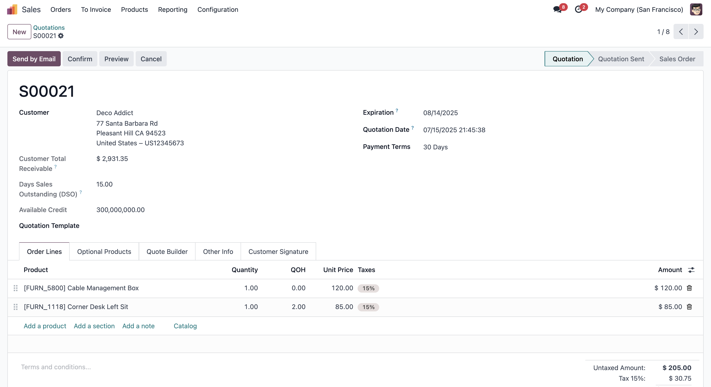

Sale Customer Credit Limit
Instant Customer Credit Insights in Sale Orders
This module extends Odoo's Sale Order with real-time display of the customer's credit limit, available credit, and Days Sales Outstanding (DSO) – all directly on the sale order form.
Key Features
- Shows customer credit limit on sale orders
- Displays available credit and total receivables
- Presents Days Sales Outstanding (DSO) for each customer
- Enhances credit control and sales decision-making
Author: Ismail Waxir
License: LGPL-3